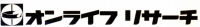
Dynavector(ダイナベクター)/ONLIFE・RESEARCH（オンライフ・リサーチ）
工学理論に元ずくユニークなカートリッジ、アームで知られるブランド。制御工学を専門とした故 富成 襄氏の設計による製品は内外で有名である。またワンタッチでカートリッジを交換可能とするシステムなど、後のT4P規格の先取りのような規格もあった。
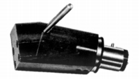 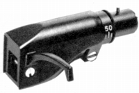
（左がダイナベクターDVS-1A、右がT4PのテクニクスのSH-90S。どちらもリードワイヤーを介さずカートリッジを簡単に交換できる）
現在の体制（ダイナベクター名義）となったのは1978年だが、それ以前はオンライフ・リサーチという社名で製品を発表していた。なおブランドとしては当時から「ダイナベクター」を使用していた。登場は1970年代に入ってからと、老舗とは言い難いが、現在(2017年12月時点）でも、カートリッジ・アームの販売を続けている、貴重な存在である。
(オンライフ・リサーチ時代は結構アンプにも力を入れていた。海外ブランドのスピーカーの代理店もやっていたと記憶している）
�T.カートリッジ
カートリッジはすべてMC型。他社と比較すると高出力型の比率が高い。また宝石カンチレバーに熱心だったブランドの一つ。
�@OMC-38シリーズ
オンライフ・リサーチ時代の製品。高出力型。DV-15シリーズの原型モデル。
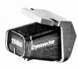
(OMC-38 15BQ)OMC-38 15A OMC-38 15AQ OMC-38 15B OMC-38 15BQ
�ADV-15シリーズ
オンライフ・リサーチ時代のOMC-38シリーズの型番変更モデル？
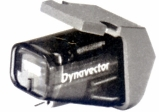
(DV-15B)�BDV-20シリーズ
Type2型は新規デザイン、DV-20CはDV-15シリーズと共通のデザインの一般的な出力（0.18mV)モデル。
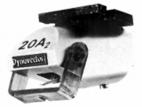
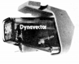
(左 DV-20A Type2 右 DV-20C）DV-20A Type2 DV-20B Type2 DV-20C
�CDV-30シリーズ
ヘッドシェル一体型。
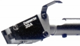
(DV-30A)�DKaratシリーズ
宝石カンチレバーでスタートした主力シリーズ。
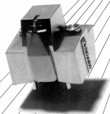
(DV/Karat)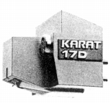
(DV/Karat 17D)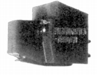
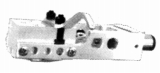
(左 Karat 19A 右 Karat Nova 13D)Karat 19A Karat 17D2 Karat Nova17D2 Karat 17DS Karat Nova 13D
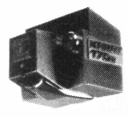
(Karat 17D2 MK�U)Karat 23RS MK�U Karat 17D2 MK�U
�EDV-10シリーズ
このブランドのローエンド・シリーズ。DV-10PはT4Pモデル。DV-10X系はDV-15の流れを汲むデザイン。
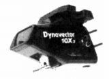
（DV-10X Type3）DV-10X Type3 DV-10P DV-10X Gold L DV-10X Gold H DV-10X4 MK�U
�FDV-50シリーズ
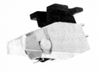
(DV-50A)�GXX-1シリーズ
可変式のフラックスダンパーを装備したシリーズ。
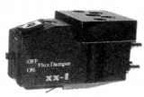
(XX-1)�Gその他
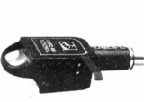
(OMC-22)
�U.昇圧トランス
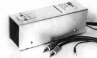
(DV-6A)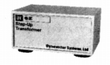
(DV-6Z)
�V.アーム
質量分離型と呼ぶ独自設計のアーム。
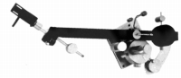
(DV-505)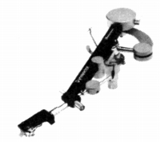
(DV-501)
�W.その他
アクセサリーはそれほどなかったようだ。
・ヘッドシェル
・その他